- Understanding Bias and Variance
- Tree models: Bias Variance
- RandomForest algorithm
- RandomForest: Parameter tuning
Random Forests
Using Majority Votes
Gunnvant Singh, SME Jigsaw Academy
Agenda
Bias and Variance
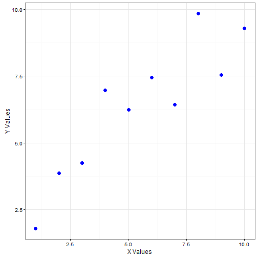
Bias and Variance
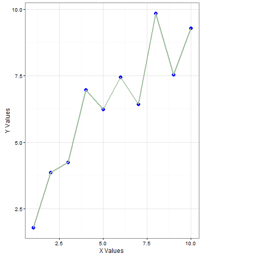
Bias and Variance
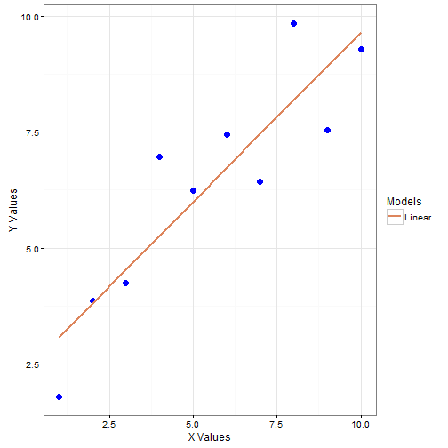
Bias and Variance
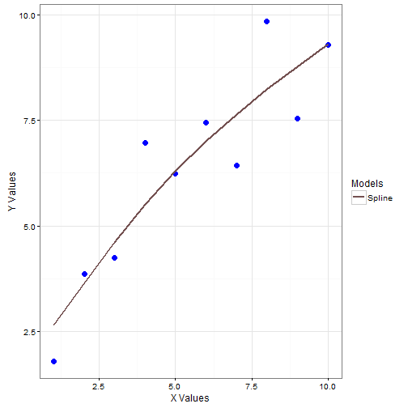
Bias and Variance
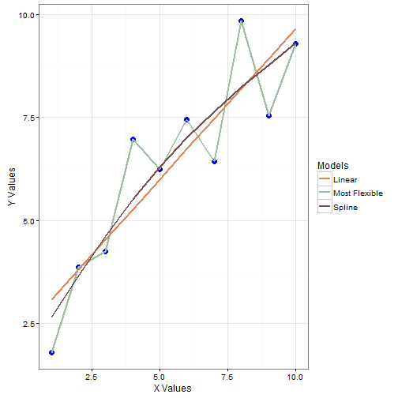
Bias and Variance
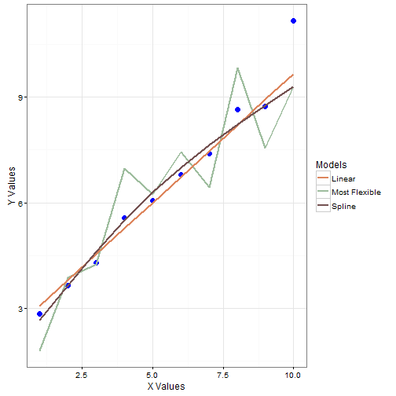
- Lets change the data
Bias and Variance
- If the flexibility decreases the variance decreases (new data doesn't change the error much)
- If the flexibility decreases then the bias increases (subtelities in the data can't be captured)

Bias and Variance
- If the flexibility decreases the variance decreases (new data doesn't change the error much)
- If the flexibility decreases then the bias increases (subtelities in the data can't be captured)
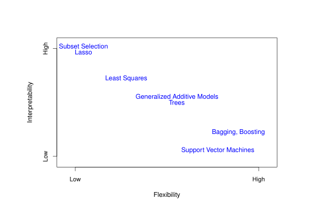
ISL,James, Witten, Hastie & Tibshirani,Ch-2,pp-25
Tree models: Bias and variance
- We've seen that Bias and Variance can't be minimized simultaneously.(Or can they be!!!!)
- If we have low bias, then the variance will be high
- For a decision tree model, out of variance and bias which one is easier to minimize?
- Hint: Image below:
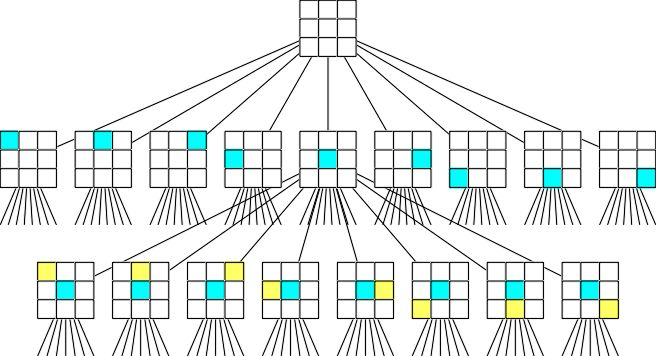
Tree models: Bias and variance
- Usually the variance in a tree model is controlled by pruning the tree
What if we don't want to prune the tree and still reduce the variance?
Hint: One of the things that causes variance in the models is ever changing "data"
Is there a mechanism by which we expose our model to the variety in data and still maintain the flexibility of model(Still have trees with large depths and hence small bias)?
Tree models: Bias and variance
- Bagging is one of the ways to accomplish this
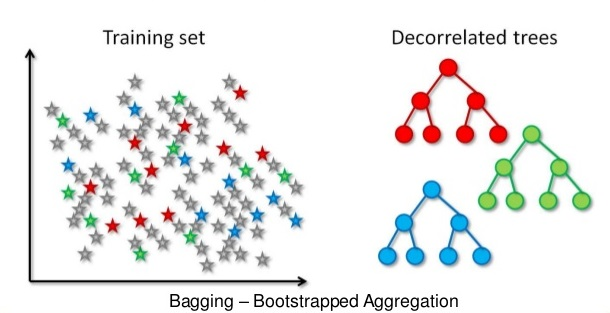
Build a lots of trees from the bootstrapped sample of data and let this group of trees (Garden of Trees!!!) decide (by majority vote)
What is bootstrapped sampling?
Tree models: Bias and variance
- Fancy name for sampling with replacement
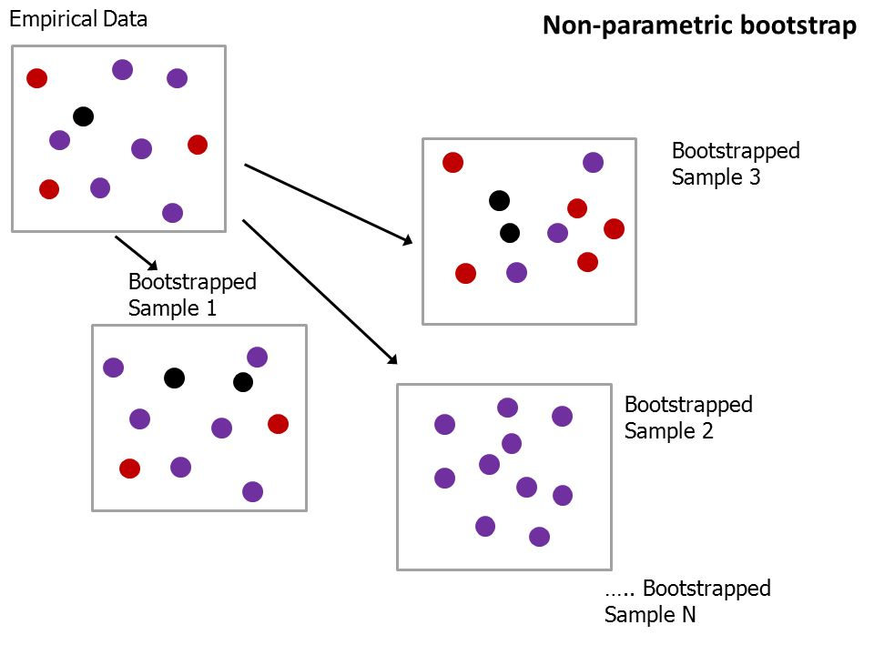
Tree models: Bias and variance
- Bagging overview:
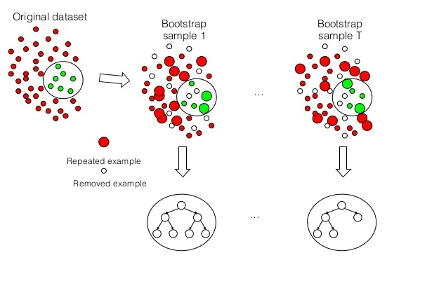
- Now we have a way of keeping the bias low and also lowering the variance
- Can we improve this any further?
RandomForest: Algorithm
- Till now we've been able to introduce randomization at the level of sampling, is there a scope for improving this further?
- Would it be a good idea to randomly choose the features also along with taking the bootstrapped samples.

RandomForest: Algorithm
Sample N cases at random with replacement to create a subset of the data (see top layer of figure above). The subset should be about 66% of the total set.
At each node:
For some number m, (m<<sqrt(Total Features): for classification problems and m<1/3(Total Features): for regression problems) m features are selected at random from all the predictor variables.
The predictor variable that provides the best split, according to some objective function, is used to do a binary split on that node.
At the next node, choose another m variables at random from all predictor variables and do the same
- Prediction is done by majority vote (for classification problems) and finding the mean response across models in a regression setting
RandomForest: Tuning the parameters
- While building a RandomForestmodel what choices do we have in terms of parameters?(Is there just once recipie to build a RandomForest?)
- Forests will differ based on what choices we make for: Number of Trees, Number of features used for a split, Nodesize, Maximum number of nodes
RandomForest: Tuning the parameters
- The problem now is how to choose these parameters
- The principle will be: Choose to reduce out of sample error
- For random forest we choose to optimize "out of bag error"